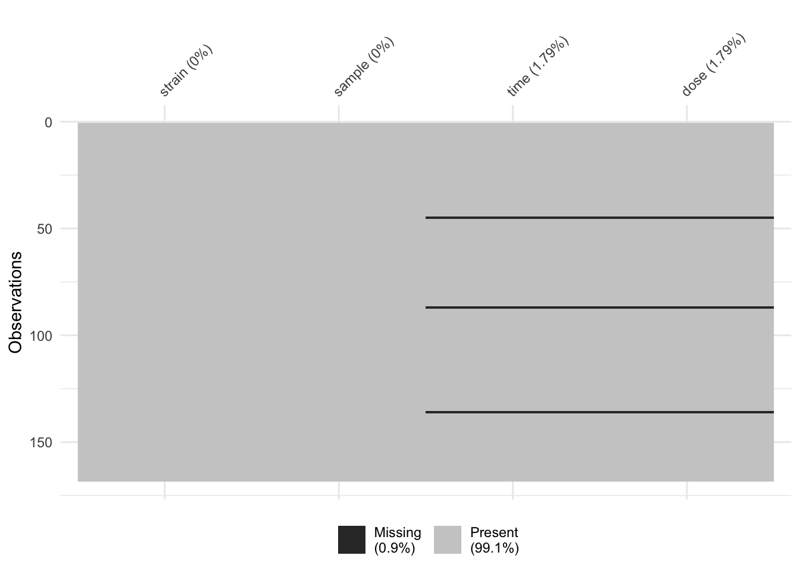

R, in particular the data.frameWhen working in R, there are some functions and data sets that are always available, but the real strength of R comes from its community of developers who continually improve the set of available features and add additional functionality through an ecosystem of “packages”.
The following packages have already been installed in RStudio Cloud, but you might need to install them when working on your own machine using install.packages("name_of_package_to_be_installed").
Before we take a dive into the tidyverse, let’s take a minute to learn a bit variable types in R. The reason that we want to do this is because everything in R is stored as an object which ultimately determines its behaviour.
## [1] TRUE FALSE## [1] "logical"## [1] 1 2 3 4 5## [1] "integer"## [1] 0.9534842 -0.2886649 0.8971328 -0.7737632 1.1943846## [1] "numeric"## [1] "a" "b"## [1] "character"## [1] 1 0 1 2 3 4 5## [1] "integer"## [[1]]
## [1] TRUE FALSE
##
## [[2]]
## [1] 1 2 3 4 5## [1] "logical"## [1] "integer"## # A tibble: 53,940 x 10
## carat cut color clarity depth table price x y z
## <dbl> <ord> <ord> <ord> <dbl> <dbl> <int> <dbl> <dbl> <dbl>
## 1 0.23 Ideal E SI2 61.5 55 326 3.95 3.98 2.43
## 2 0.21 Premium E SI1 59.8 61 326 3.89 3.84 2.31
## 3 0.23 Good E VS1 56.9 65 327 4.05 4.07 2.31
## 4 0.290 Premium I VS2 62.4 58 334 4.2 4.23 2.63
## 5 0.31 Good J SI2 63.3 58 335 4.34 4.35 2.75
## 6 0.24 Very Good J VVS2 62.8 57 336 3.94 3.96 2.48
## 7 0.24 Very Good I VVS1 62.3 57 336 3.95 3.98 2.47
## 8 0.26 Very Good H SI1 61.9 55 337 4.07 4.11 2.53
## 9 0.22 Fair E VS2 65.1 61 337 3.87 3.78 2.49
## 10 0.23 Very Good H VS1 59.4 61 338 4 4.05 2.39
## # … with 53,930 more rows## [1] "tbl_df" "tbl" "data.frame"## Observations: 53,940
## Variables: 10
## $ carat <dbl> 0.23, 0.21, 0.23, 0.29, 0.31, 0.24, 0.24, 0.26, 0.22, 0.23, 0…
## $ cut <ord> Ideal, Premium, Good, Premium, Good, Very Good, Very Good, Ve…
## $ color <ord> E, E, E, I, J, J, I, H, E, H, J, J, F, J, E, E, I, J, J, J, I…
## $ clarity <ord> SI2, SI1, VS1, VS2, SI2, VVS2, VVS1, SI1, VS2, VS1, SI1, VS1,…
## $ depth <dbl> 61.5, 59.8, 56.9, 62.4, 63.3, 62.8, 62.3, 61.9, 65.1, 59.4, 6…
## $ table <dbl> 55, 61, 65, 58, 58, 57, 57, 55, 61, 61, 55, 56, 61, 54, 62, 5…
## $ price <int> 326, 326, 327, 334, 335, 336, 336, 337, 337, 338, 339, 340, 3…
## $ x <dbl> 3.95, 3.89, 4.05, 4.20, 4.34, 3.94, 3.95, 4.07, 3.87, 4.00, 4…
## $ y <dbl> 3.98, 3.84, 4.07, 4.23, 4.35, 3.96, 3.98, 4.11, 3.78, 4.05, 4…
## $ z <dbl> 2.43, 2.31, 2.31, 2.63, 2.75, 2.48, 2.47, 2.53, 2.49, 2.39, 2…In this session, we will read in a Excel dataset (.xls format). We will use the readxl package to perform this task.
Of course, .xls is not the only data type that R can deal with. Have a look at this cheatsheet to see some data types that the readr package is able to handle. If you want to read in SAS or SPSS files, have a look at the haven package.
The read_excel() function from the readxl package is perfect to read in a .xls file, let’s try that!
## New names:
## * `` -> ...2
## * `` -> ...3
## * `` -> ...4
## * `` -> ...5
## * `` -> ...6
## * … and 1 more problem## # A tibble: 6 x 7
## `Supplementary Table 4… ...2 ...3 ...4 ...5 ...6 ...7
## <chr> <chr> <chr> <chr> <chr> <chr> <chr>
## 1 Sample Treatment and R… <NA> <NA> <NA> <NA> <NA> <NA>
## 2 <NA> <NA> <NA> <NA> <NA> <NA> <NA>
## 3 Strain Sample "Time\n… "Dose\n… RIN [ ng/µL ] 260/280
## 4 HW HW1 1.5 0 9.800000… 1425.97 2.120000…
## 5 HW HW2 1.5 0 9.800000… 2006.339… 2.109999…
## 6 HW HW3 1.5 0 9.900000… 1043.49 2.140000…Oh, no! We seemed to read in a very ugly dataset. What happened?
If we open the sample_data.xls file in Excel, we see that R didn’t do anything wrong! It actually faithfully read in everything that you can see in the Excel sheet.
This .xls file is poorly formatted with the first three rows being notes that are not part of the data table. We should ask the function read_excel to skip the first three rows, use the 4th row as the column headings. How can we do that?
We use the skip argument to the read_excel() function. Have a look at this!
## # A tibble: 6 x 7
## Strain Sample `Time\n(hours)` `Dose\n(µg/kg)` RIN `[ ng/µL ]` `260/280`
## <chr> <chr> <chr> <chr> <chr> <chr> <chr>
## 1 HW HW1 1.5 0 9.80000… 1425.97 2.1200000…
## 2 HW HW2 1.5 0 9.80000… 2006.339999… 2.1099999…
## 3 HW HW3 1.5 0 9.90000… 1043.49 2.1400000…
## 4 HW HW4 1.5 100 9.59999… 1931.45 2.1099999…
## 5 HW HW5 1.5 100 10 524.2599999… 2.1299999…
## 6 HW HW6 1.5 100 9.5 2077.04 2.0899999…The column names of this dataset isn’t quite as nice as we would like.
## [1] "Strain" "Sample" "Time\n(hours)" "Dose\n(µg/kg)"
## [5] "RIN" "[ ng/µL ]" "260/280"We can tidy them using the clean_names() function from the janitor package. Even though this package is not officially part of the tidyverse, it is a very useful package nonetheless.
## [1] "Strain" "Sample" "Time\n(hours)" "Dose\n(µg/kg)"
## [5] "RIN" "[ ng/µL ]" "260/280"We can see the new column names:
## [1] "strain" "sample" "time_hours" "dose_µg_kg" "rin"
## [6] "ng_µ_l" "x260_280"Note that we have also used the pipe operator, %>%, which passes the results from one function into the next function. In the above case, these two lines of code would give identical results:
raw_data %>% janitor::clean_names()
janitor::clean_names(raw_data)We will use the pipe operator a lot over the next two days, it’s a game changer for the way you write R code.
We will now use the dplyr package to perform some basic data cleaning. The dplyr package is one of the most popular packages in the tidyverse. Its main functions are designed to interact with the data.frame object in R in a very intuitive way. This is why its name is an excellent pun: it is a plyer for data frames (okay, maybe it depends on your sense of humour).
Let’s see dplyr in action. If we want to select only the strain column of this data, then we can use the select function from the dplyr package.
## Observations: 168
## Variables: 1
## $ strain <chr> "HW", "HW", "HW", "HW", "HW", "HW", "HW", "HW", "HW", "HW", "H…If we want to select multiple columns in the data, we could include more names (unquoted) into the dplyr::select() function.
However, sometimes it is useful to select columns using a character vector, especially considering the “dose” column has a Greek symbol (nano-gram) inside.
# select using unquoted column names
clean_col_data %>%
dplyr::select(strain, sample) %>%
dplyr::glimpse()## Observations: 168
## Variables: 2
## $ strain <chr> "HW", "HW", "HW", "HW", "HW", "HW", "HW", "HW", "HW", "HW", "H…
## $ sample <chr> "HW1", "HW2", "HW3", "HW4", "HW5", "HW6", "WW45", "WW46", "WW4…## Observations: 168
## Variables: 4
## $ strain <chr> "HW", "HW", "HW", "HW", "HW", "HW", "HW", "HW", "HW", "HW"…
## $ sample <chr> "HW1", "HW2", "HW3", "HW4", "HW5", "HW6", "WW45", "WW46", …
## $ time_hours <chr> "1.5", "1.5", "1.5", "1.5", "1.5", "1.5", "3", "3", "3", "…
## $ dose_µg_kg <chr> "0", "0", "0", "100", "100", "100", "100", "100", "100", "…## Observations: 168
## Variables: 5
## $ strain <chr> "HW", "HW", "HW", "HW", "HW", "HW", "HW", "HW", "HW", "HW"…
## $ sample <chr> "HW1", "HW2", "HW3", "HW4", "HW5", "HW6", "WW45", "WW46", …
## $ time_hours <chr> "1.5", "1.5", "1.5", "1.5", "1.5", "1.5", "3", "3", "3", "…
## $ dose_µg_kg <chr> "0", "0", "0", "100", "100", "100", "100", "100", "100", "…
## $ rin <chr> "9.8000000000000007", "9.8000000000000007", "9.90000000000…# columns starting with a particular string
clean_col_data %>%
dplyr::select(starts_with("s")) %>%
dplyr::glimpse()## Observations: 168
## Variables: 2
## $ strain <chr> "HW", "HW", "HW", "HW", "HW", "HW", "HW", "HW", "HW", "HW", "H…
## $ sample <chr> "HW1", "HW2", "HW3", "HW4", "HW5", "HW6", "WW45", "WW46", "WW4…# select using character vector
select_columns = colnames(clean_col_data)[1:4]
sub_data = clean_col_data %>%
dplyr::select(one_of(select_columns))
glimpse(sub_data)## Observations: 168
## Variables: 4
## $ strain <chr> "HW", "HW", "HW", "HW", "HW", "HW", "HW", "HW", "HW", "HW"…
## $ sample <chr> "HW1", "HW2", "HW3", "HW4", "HW5", "HW6", "WW45", "WW46", …
## $ time_hours <chr> "1.5", "1.5", "1.5", "1.5", "1.5", "1.5", "3", "3", "3", "…
## $ dose_µg_kg <chr> "0", "0", "0", "100", "100", "100", "100", "100", "100", "…We can also rename the columns.
## Observations: 168
## Variables: 4
## $ strain <chr> "HW", "HW", "HW", "HW", "HW", "HW", "HW", "HW", "HW", "HW", "H…
## $ sample <chr> "HW1", "HW2", "HW3", "HW4", "HW5", "HW6", "WW45", "WW46", "WW4…
## $ time <chr> "1.5", "1.5", "1.5", "1.5", "1.5", "1.5", "3", "3", "3", "3", …
## $ dose <chr> "0", "0", "0", "100", "100", "100", "100", "100", "100", "100"…The dplyr::mutate() function does exactly what you would expect: it changes an entire column. It has the structure that new column = some changes to the (old column).
## Warning: NAs introduced by coercion## # A tibble: 168 x 5
## strain sample time dose time_2
## <chr> <chr> <chr> <chr> <dbl>
## 1 HW HW1 1.5 0 1.5
## 2 HW HW2 1.5 0 1.5
## 3 HW HW3 1.5 0 1.5
## 4 HW HW4 1.5 100 1.5
## 5 HW HW5 1.5 100 1.5
## 6 HW HW6 1.5 100 1.5
## 7 HW WW45 3 100 3
## 8 HW WW46 3 100 3
## 9 HW WW47 3 100 3
## 10 HW WW48 3 100 3
## # … with 158 more rowsIf the new column has the same name as the old column, then this column will be over-written.
## Warning: NAs introduced by coercion
## Warning: NAs introduced by coercion## # A tibble: 168 x 4
## strain sample time dose
## <chr> <chr> <dbl> <dbl>
## 1 HW HW1 1.5 0
## 2 HW HW2 1.5 0
## 3 HW HW3 1.5 0
## 4 HW HW4 1.5 100
## 5 HW HW5 1.5 100
## 6 HW HW6 1.5 100
## 7 HW WW45 3 100
## 8 HW WW46 3 100
## 9 HW WW47 3 100
## 10 HW WW48 3 100
## # … with 158 more rowsWhen we mutated our data, we saw that there was a warning message, NAs introduced by coercion. The NA is is R’s way to represent a missing value. So what happened?
If we have a quick look at the original xls file, we see that someone must have copied the data with the heading four times. This is why when we converted time into a numeric variable, R recognised the column headings in the middle of the data as weird values and assigned those with NA.
We can visualise NA in our data using the vis_miss() function from the visdat package.

We will now filtering out the three rows of column headings, which we have converted into NA in the time and dose columns.
We will use the filter() function from the dplyr package. The function takes in logical vectors of the same length as the nrow(data) as the input.
## # A tibble: 3 x 4
## strain sample time dose
## <chr> <chr> <dbl> <dbl>
## 1 Strain Sample NA NA
## 2 Strain Sample NA NA
## 3 Strain Sample NA NA## The reverse of the above is written with a `!`.
filter_data = mutate_data %>%
dplyr::filter(!is.na(time))
filter_data## # A tibble: 165 x 4
## strain sample time dose
## <chr> <chr> <dbl> <dbl>
## 1 HW HW1 1.5 0
## 2 HW HW2 1.5 0
## 3 HW HW3 1.5 0
## 4 HW HW4 1.5 100
## 5 HW HW5 1.5 100
## 6 HW HW6 1.5 100
## 7 HW WW45 3 100
## 8 HW WW46 3 100
## 9 HW WW47 3 100
## 10 HW WW48 3 100
## # … with 155 more rowsWe will finish today’s session with something simple, but powerful.
If we want to create summary statistics of our data.frame, we need to think about which variable are we summarising over. In this case, we will count the number of samples for each of the strains.
## # A tibble: 2 x 2
## # Groups: strain [2]
## strain n
## <chr> <int>
## 1 HW 85
## 2 LE 80## # A tibble: 2 x 2
## strain `n()`
## <chr> <int>
## 1 HW 85
## 2 LE 80## # A tibble: 18 x 3
## # Groups: strain, dose [18]
## strain dose n
## <chr> <dbl> <int>
## 1 HW 0 24
## 2 HW 0.001 4
## 3 HW 0.01 4
## 4 HW 0.1 4
## 5 HW 1 4
## 6 HW 10 4
## 7 HW 100 33
## 8 HW 1000 4
## 9 HW 3000 4
## 10 LE 0 27
## 11 LE 0.001 4
## 12 LE 0.01 4
## 13 LE 0.1 4
## 14 LE 1 4
## 15 LE 10 4
## 16 LE 50 4
## 17 LE 100 25
## 18 LE 1000 4## # A tibble: 36 x 4
## # Groups: strain, dose, time [36]
## strain dose time n
## <chr> <dbl> <dbl> <int>
## 1 HW 0 1.5 3
## 2 HW 0 19 7
## 3 HW 0 96 5
## 4 HW 0 240 5
## 5 HW 0 384 4
## 6 HW 0.001 19 4
## 7 HW 0.01 19 4
## 8 HW 0.1 19 4
## 9 HW 1 19 4
## 10 HW 10 19 4
## # … with 26 more rows## R version 3.6.1 (2019-07-05)
## Platform: x86_64-apple-darwin15.6.0 (64-bit)
## Running under: macOS Catalina 10.15.1
##
## Matrix products: default
## BLAS: /Library/Frameworks/R.framework/Versions/3.6/Resources/lib/libRblas.0.dylib
## LAPACK: /Library/Frameworks/R.framework/Versions/3.6/Resources/lib/libRlapack.dylib
##
## locale:
## [1] en_AU.UTF-8/en_AU.UTF-8/en_AU.UTF-8/C/en_AU.UTF-8/en_AU.UTF-8
##
## attached base packages:
## [1] stats graphics grDevices utils datasets methods base
##
## other attached packages:
## [1] visdat_0.5.3 readxl_1.3.1 janitor_1.2.0
## [4] forcats_0.4.0 stringr_1.4.0 dplyr_0.8.3
## [7] purrr_0.3.3 readr_1.3.1 tidyr_1.0.0
## [10] tibble_2.1.3 ggplot2_3.2.1 tidyverse_1.3.0.9000
##
## loaded via a namespace (and not attached):
## [1] tidyselect_0.2.5 xfun_0.11 haven_2.2.0 lattice_0.20-38
## [5] snakecase_0.11.0 colorspace_1.4-1 vctrs_0.2.0 generics_0.0.2
## [9] htmltools_0.4.0 yaml_2.2.0 utf8_1.1.4 rlang_0.4.1
## [13] pillar_1.4.2 glue_1.3.1 withr_2.1.2 DBI_1.0.0
## [17] dbplyr_1.4.2 modelr_0.1.5 lifecycle_0.1.0 munsell_0.5.0
## [21] gtable_0.3.0 cellranger_1.1.0 rvest_0.3.5 evaluate_0.14
## [25] labeling_0.3 knitr_1.26 fansi_0.4.0 broom_0.5.2
## [29] Rcpp_1.0.3 scales_1.1.0 backports_1.1.5 jsonlite_1.6
## [33] farver_2.0.1 fs_1.3.1 hms_0.5.2 digest_0.6.22
## [37] stringi_1.4.3 grid_3.6.1 cli_1.1.0 tools_3.6.1
## [41] magrittr_1.5 lazyeval_0.2.2 crayon_1.3.4 pkgconfig_2.0.3
## [45] zeallot_0.1.0 ellipsis_0.3.0 xml2_1.2.2 reprex_0.3.0
## [49] lubridate_1.7.4 assertthat_0.2.1 rmarkdown_1.17 httr_1.4.1
## [53] rstudioapi_0.10 R6_2.4.1 nlme_3.1-141 compiler_3.6.1Need to reference the tidyverse, there’s a new canonical way to do that, one reference for all tidyverse packages.
Wickham et al., (2019). Welcome to the tidyverse. Journal of Open Source Software, 4(43), 1686, https://doi.org/10.21105/joss.01686
@Article{Tidyverse:2019,
title = {Welcome to the {tidyverse}},
author = {Hadley Wickham and Mara Averick and Jennifer Bryan and Winston Chang and Lucy D'Agostino McGowan and Romain François and Garrett Grolemund and Alex Hayes and Lionel Henry and Jim Hester and Max Kuhn and Thomas Lin Pedersen and Evan Miller and Stephan Milton Bache and Kirill Müller and Jeroen Ooms and David Robinson and Dana Paige Seidel and Vitalie Spinu and Kohske Takahashi and Davis Vaughan and Claus Wilke and Kara Woo and Hiroaki Yutani},
year = {2019},
journal = {Journal of Open Source Software},
volume = {4},
number = {43},
pages = {1686},
doi = {10.21105/joss.01686},
}